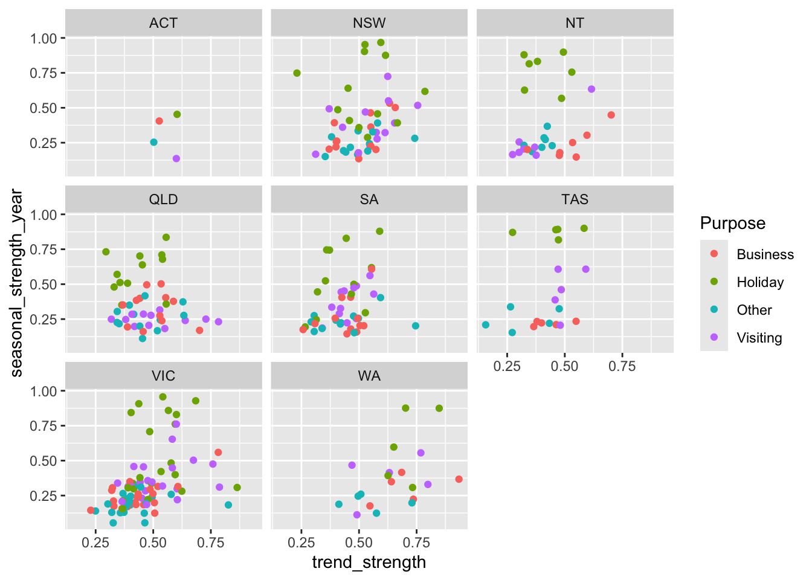
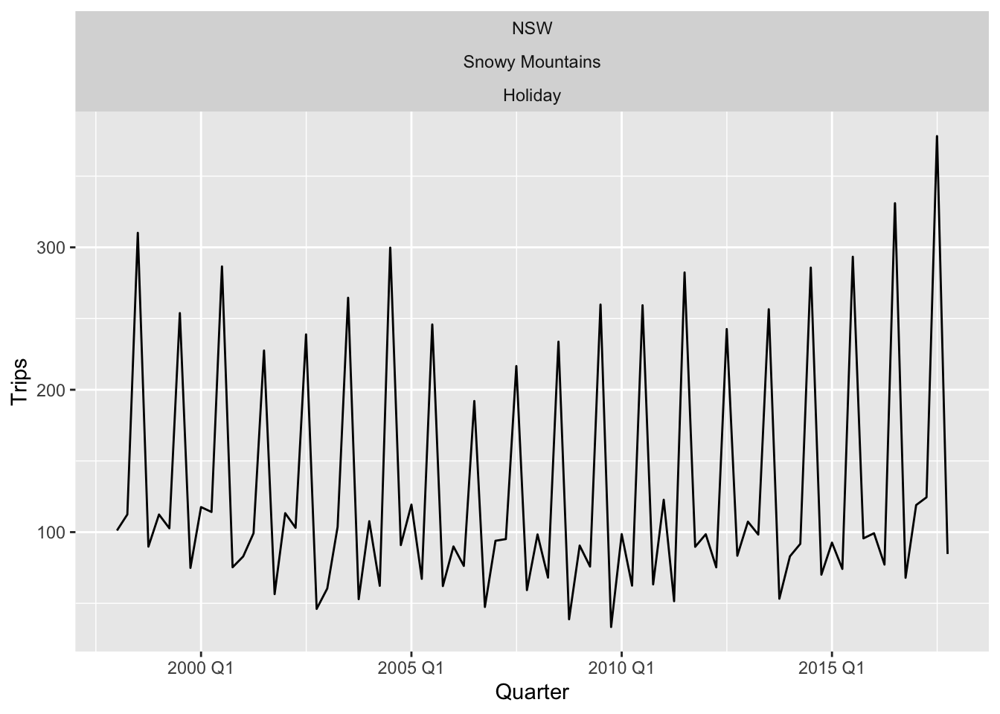
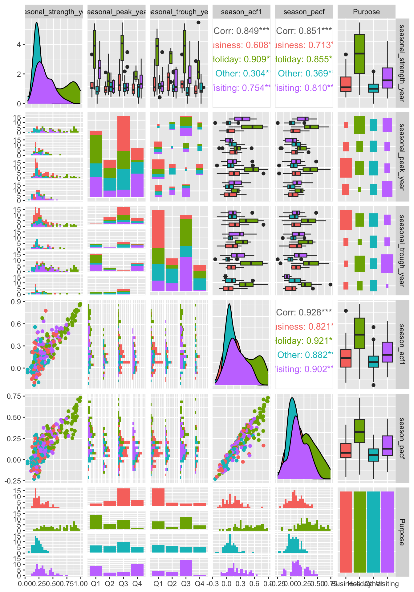
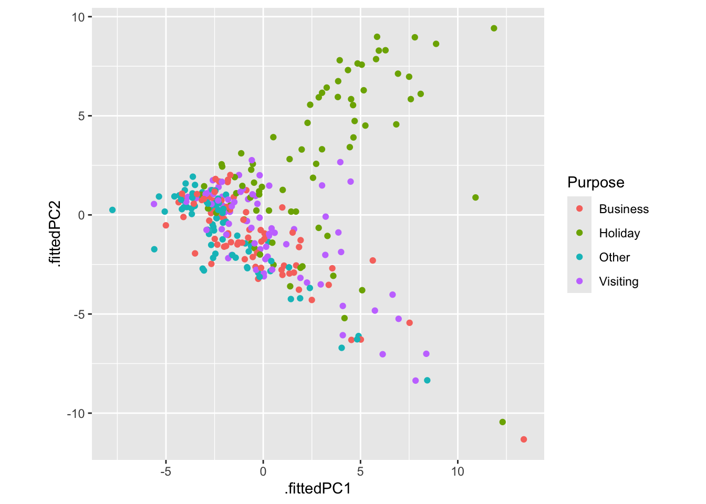
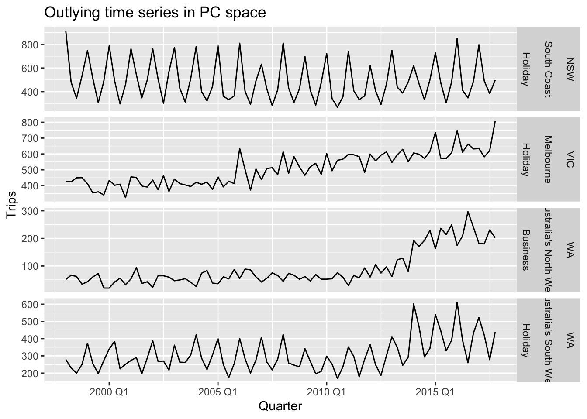
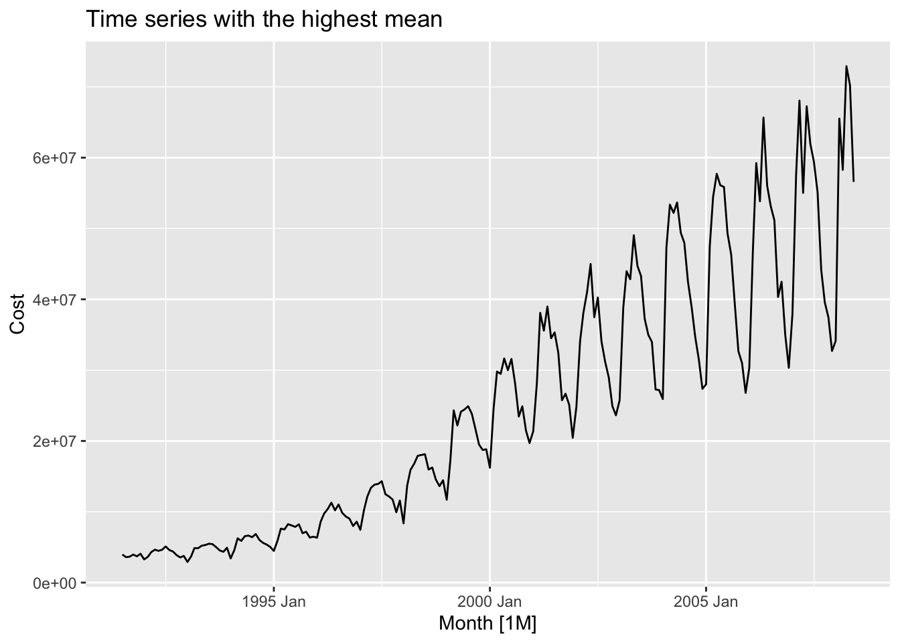
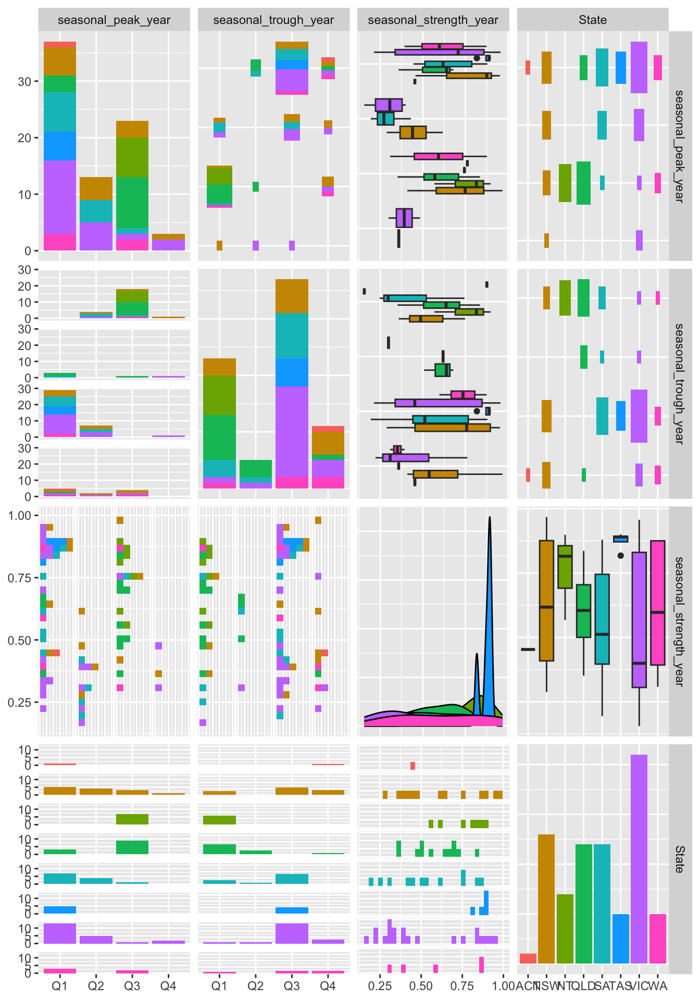

Chapter 4 Time series features
# loading libraries
library(tsibble)
library(tsibbledata)
library(tidyverse)
# to read data
library(rio)
library(ggplot2)
library(fabletools)
library(feasts)
library(fpp3)
library(latex2exp)
library(forecast)Different features of time series could be used to explore the properties of the series.
4.1 Some simple statistics
## # A tibble: 304 × 4
## Region State Purpose mean
## <chr> <chr> <chr> <dbl>
## 1 Kangaroo Island SA Other 0.340
## 2 MacDonnell NT Other 0.449
## 3 Wilderness West TAS Other 0.478
## 4 Barkly NT Other 0.632
## 5 Clare Valley SA Other 0.898
## 6 Barossa SA Other 1.02
## 7 Kakadu Arnhem NT Other 1.04
## 8 Lasseter NT Other 1.14
## 9 Wimmera VIC Other 1.15
## 10 MacDonnell NT Visiting 1.18
## # ℹ 294 more rows## # A tibble: 304 × 8
## Region State Purpose `0%` `25%` `50%` `75%` `100%`
## <chr> <chr> <chr> <dbl> <dbl> <dbl> <dbl> <dbl>
## 1 Adelaide SA Business 68.7 134. 153. 177. 242.
## 2 Adelaide SA Holiday 108. 135. 154. 172. 224.
## 3 Adelaide SA Other 25.9 43.9 53.8 62.5 107.
## 4 Adelaide SA Visiting 137. 179. 206. 229. 270.
## 5 Adelaide Hills SA Business 0 0 1.26 3.92 28.6
## 6 Adelaide Hills SA Holiday 0 5.77 8.52 14.1 35.8
## 7 Adelaide Hills SA Other 0 0 0.908 2.09 8.95
## 8 Adelaide Hills SA Visiting 0.778 8.91 12.2 16.8 81.1
## 9 Alice Springs NT Business 1.01 9.13 13.3 18.5 34.1
## 10 Alice Springs NT Holiday 2.81 16.9 31.5 44.8 76.5
## # ℹ 294 more rows4.1.1 ACF features
## # A tibble: 304 × 10
## Region State Purpose acf1 acf10 diff1_acf1 diff1_acf10 diff2_acf1 diff2_acf10 season_acf1
## <chr> <chr> <chr> <dbl> <dbl> <dbl> <dbl> <dbl> <dbl> <dbl>
## 1 Adelaide SA Business 0.0333 0.131 -0.520 0.463 -0.676 0.741 0.201
## 2 Adelaide SA Holiday 0.0456 0.372 -0.343 0.614 -0.487 0.558 0.351
## 3 Adelaide SA Other 0.517 1.15 -0.409 0.383 -0.675 0.792 0.342
## 4 Adelaide SA Visiting 0.0684 0.294 -0.394 0.452 -0.518 0.447 0.345
## 5 Adelaide Hills SA Business 0.0709 0.134 -0.580 0.415 -0.750 0.746 -0.0628
## 6 Adelaide Hills SA Holiday 0.131 0.313 -0.536 0.500 -0.716 0.906 0.208
## 7 Adelaide Hills SA Other 0.261 0.330 -0.253 0.317 -0.457 0.392 0.0745
## 8 Adelaide Hills SA Visiting 0.139 0.117 -0.472 0.239 -0.626 0.408 0.170
## 9 Alice Springs NT Business 0.217 0.367 -0.500 0.381 -0.658 0.587 0.315
## 10 Alice Springs NT Holiday -0.00660 2.11 -0.153 2.11 -0.274 1.55 0.729
## # ℹ 294 more rows4.1.2 STL features
- Strength of trend:
For strongly trended data, the seasonally adjusted data should have much more variation than the remainder But for data with little or no trend, the two variances should be approximately the same.
\[ F_T = max(0, 1 - \frac {Var(R_t)} {Var(T_t + R_t)}), [0, 1] \]
- Strength of seasonality:
A series with seasonal strength \(F_S\) close to 0 exhibits almost no seasonality, while a series with strong seasonality will have \(F_S\) close to 1.
\[ F_S = max(0, 1 - \frac {Var(R_t)} {Var(S_t + R_t)}), [0, 1] \]
## # A tibble: 304 × 12
## Region State Purpose trend_strength seasonal_strength_year seasonal_peak_year seasonal_trough_year spikiness linearity curvature stl_e_acf1 stl_e_acf10
## <chr> <chr> <chr> <dbl> <dbl> <dbl> <dbl> <dbl> <dbl> <dbl> <dbl> <dbl>
## 1 Adelaide SA Business 0.464 0.407 3 1 158. -5.31 71.6 -0.532 0.594
## 2 Adelaide SA Holiday 0.554 0.619 1 2 9.17 49.0 78.7 -0.510 0.561
## 3 Adelaide SA Other 0.746 0.202 2 1 2.10 95.1 43.4 -0.351 0.403
## 4 Adelaide SA Visiting 0.435 0.452 1 3 56.1 34.6 71.4 -0.501 1.01
## 5 Adelaide Hills SA Business 0.464 0.179 3 0 0.103 0.968 -3.22 -0.600 0.497
## 6 Adelaide Hills SA Holiday 0.528 0.296 2 1 0.177 10.5 24.0 -0.481 0.350
## 7 Adelaide Hills SA Other 0.593 0.404 2 2 0.000444 4.28 3.19 -0.298 0.281
## 8 Adelaide Hills SA Visiting 0.488 0.254 0 3 6.50 34.2 -0.529 -0.472 0.446
## 9 Alice Springs NT Business 0.534 0.251 0 1 0.169 23.8 19.5 -0.492 0.548
## 10 Alice Springs NT Holiday 0.381 0.832 3 1 0.739 -19.6 10.5 -0.522 0.726
## # ℹ 294 more rowsTo identify what type of series are heavily trended and what are most seasonal.
tourism |>
features(Trips, feat_stl) |>
ggplot(aes(x = trend_strength, y = seasonal_strength_year, col = Purpose)) +
geom_point() +
facet_wrap(vars(State))
The most seasonal series can also be easily identified and plotted.
tourism |>
features(Trips, feat_stl) |>
filter(seasonal_strength_year == max(seasonal_strength_year)) |>
left_join(tourism, by=c('State', 'Region', 'Purpose'), multiple='all') |>
ggplot(aes(x = Quarter, y = Trips)) +
geom_line() +
facet_wrap(vars(State, Region, Purpose))
feat_stl() returns:
trend_strengthis strength of trendseasonal_strength_yearis strength of seasonalityseasonal_peak_yearindicates the timing of the peaksseasonal_trough_yearindicates the timing of the troughsspikinessmeasures the prevalence of spikes in the remainder componentlinearitymeasures the linearity of the trend componentcurvaturemeasures the curvature of the trend componentstl_e_acf1is the first autocorrelation coefficientstl_e_acf10is the sum of squares of the first ten autocorrelation coefficients
4.1.3 Other features
coef_hurstwill calculate the Hurst coefficient of a time series which is a measure of “long memory”. A series with long memory will have significant autocorrelations for many lags.
## # A tibble: 304 × 4
## Region State Purpose coef_hurst
## <chr> <chr> <chr> <dbl>
## 1 Adelaide SA Business 0.571
## 2 Adelaide SA Holiday 0.558
## 3 Adelaide SA Other 0.862
## 4 Adelaide SA Visiting 0.583
## 5 Adelaide Hills SA Business 0.555
## 6 Adelaide Hills SA Holiday 0.651
## 7 Adelaide Hills SA Other 0.672
## 8 Adelaide Hills SA Visiting 0.653
## 9 Alice Springs NT Business 0.713
## 10 Alice Springs NT Holiday 0.500
## # ℹ 294 more rowsInterpretation:
- \(H = 0.5\): The time series is a random walk with no memory (random behavior).
- \(H < 0.5\): The time series tends to reverse direction.
- \(H > 0.5\): The time series is persistent, meaning that if the series has been increasing, it is more likely to continue increasing, and if it has been decreasing, it is more likely to continue decreasing.
feat_spectralwill compute the (Shannon) spectral entropy of a time series, which is a measure of how easy the series is to forecast. A series which has strong trend and seasonality (and so is easy to forecast) will have entropy close to 0. A series that is very noisy (and so is difficult to forecast) will have entropy close to 1.
## # A tibble: 304 × 4
## Region State Purpose spectral_entropy
## <chr> <chr> <chr> <dbl>
## 1 Adelaide SA Business 0.843
## 2 Adelaide SA Holiday 0.753
## 3 Adelaide SA Other 0.793
## 4 Adelaide SA Visiting 0.768
## 5 Adelaide Hills SA Business 0.991
## 6 Adelaide Hills SA Holiday 0.928
## 7 Adelaide Hills SA Other 0.913
## 8 Adelaide Hills SA Visiting 1
## 9 Alice Springs NT Business 0.944
## 10 Alice Springs NT Holiday 0.544
## # ℹ 294 more rows
box_piercegives the Box-Pierce statistic for testing if a time series is white noise, and the corresponding p-value.
## # A tibble: 304 × 5
## Region State Purpose bp_stat bp_pvalue
## <chr> <chr> <chr> <dbl> <dbl>
## 1 Adelaide SA Business 0.0886 0.766
## 2 Adelaide SA Holiday 0.166 0.684
## 3 Adelaide SA Other 21.4 0.00000379
## 4 Adelaide SA Visiting 0.374 0.541
## 5 Adelaide Hills SA Business 0.402 0.526
## 6 Adelaide Hills SA Holiday 1.38 0.240
## 7 Adelaide Hills SA Other 5.46 0.0195
## 8 Adelaide Hills SA Visiting 1.55 0.213
## 9 Alice Springs NT Business 3.78 0.0518
## 10 Alice Springs NT Holiday 0.00349 0.953
## # ℹ 294 more rows
ljung_boxgives the Ljung-Box statistic for testing if a time series is white noise, and the corresponding p-value.
## # A tibble: 304 × 5
## Region State Purpose lb_stat lb_pvalue
## <chr> <chr> <chr> <dbl> <dbl>
## 1 Adelaide SA Business 0.0919 0.762
## 2 Adelaide SA Holiday 0.172 0.678
## 3 Adelaide SA Other 22.2 0.00000248
## 4 Adelaide SA Visiting 0.388 0.533
## 5 Adelaide Hills SA Business 0.418 0.518
## 6 Adelaide Hills SA Holiday 1.43 0.231
## 7 Adelaide Hills SA Other 5.66 0.0173
## 8 Adelaide Hills SA Visiting 1.61 0.205
## 9 Alice Springs NT Business 3.93 0.0476
## 10 Alice Springs NT Holiday 0.00362 0.952
## # ℹ 294 more rows
guerrerocomputes the optimal \(\lambda\) value for a Box-Cox transformation using the Guerrero method
## # A tibble: 304 × 4
## Region State Purpose lambda_guerrero
## <chr> <chr> <chr> <dbl>
## 1 Adelaide SA Business 0.514
## 2 Adelaide SA Holiday -0.169
## 3 Adelaide SA Other -0.227
## 4 Adelaide SA Visiting 0.870
## 5 Adelaide Hills SA Business 0.124
## 6 Adelaide Hills SA Holiday 0.246
## 7 Adelaide Hills SA Other 0.365
## 8 Adelaide Hills SA Visiting 0.00414
## 9 Alice Springs NT Business 0.561
## 10 Alice Springs NT Holiday 0.00174
## # ℹ 294 more rows4.2 Exploring Australian tourism data
## # A tibble: 304 × 51
## Region State Purpose trend_strength seasonal_strength_year seasonal_peak_year seasonal_trough_year spikiness linearity curvature stl_e_acf1 stl_e_acf10 acf1 acf10
## <chr> <chr> <chr> <dbl> <dbl> <dbl> <dbl> <dbl> <dbl> <dbl> <dbl> <dbl> <dbl> <dbl>
## 1 Adela… SA Busine… 0.464 0.407 3 1 1.58e+2 -5.31 71.6 -0.532 0.594 0.0333 0.131
## 2 Adela… SA Holiday 0.554 0.619 1 2 9.17e+0 49.0 78.7 -0.510 0.561 0.0456 0.372
## 3 Adela… SA Other 0.746 0.202 2 1 2.10e+0 95.1 43.4 -0.351 0.403 0.517 1.15
## 4 Adela… SA Visiti… 0.435 0.452 1 3 5.61e+1 34.6 71.4 -0.501 1.01 0.0684 0.294
## 5 Adela… SA Busine… 0.464 0.179 3 0 1.03e-1 0.968 -3.22 -0.600 0.497 0.0709 0.134
## 6 Adela… SA Holiday 0.528 0.296 2 1 1.77e-1 10.5 24.0 -0.481 0.350 0.131 0.313
## 7 Adela… SA Other 0.593 0.404 2 2 4.44e-4 4.28 3.19 -0.298 0.281 0.261 0.330
## 8 Adela… SA Visiti… 0.488 0.254 0 3 6.50e+0 34.2 -0.529 -0.472 0.446 0.139 0.117
## 9 Alice… NT Busine… 0.534 0.251 0 1 1.69e-1 23.8 19.5 -0.492 0.548 0.217 0.367
## 10 Alice… NT Holiday 0.381 0.832 3 1 7.39e-1 -19.6 10.5 -0.522 0.726 -0.00660 2.11
## # ℹ 294 more rows
## # ℹ 37 more variables: diff1_acf1 <dbl>, diff1_acf10 <dbl>, diff2_acf1 <dbl>, diff2_acf10 <dbl>, season_acf1 <dbl>, pacf5 <dbl>, diff1_pacf5 <dbl>, diff2_pacf5 <dbl>,
## # season_pacf <dbl>, zero_run_mean <dbl>, nonzero_squared_cv <dbl>, zero_start_prop <dbl>, zero_end_prop <dbl>, lambda_guerrero <dbl>, kpss_stat <dbl>,
## # kpss_pvalue <dbl>, pp_stat <dbl>, pp_pvalue <dbl>, ndiffs <int>, nsdiffs <int>, bp_stat <dbl>, bp_pvalue <dbl>, lb_stat <dbl>, lb_pvalue <dbl>, var_tiled_var <dbl>,
## # var_tiled_mean <dbl>, shift_level_max <dbl>, shift_level_index <dbl>, shift_var_max <dbl>, shift_var_index <dbl>, shift_kl_max <dbl>, shift_kl_index <dbl>,
## # spectral_entropy <dbl>, n_crossing_points <int>, longest_flat_spot <int>, coef_hurst <dbl>, stat_arch_lm <dbl>Provided the urca and fracdiff packages are installed, this gives 48 features for every combination of the three key variables (Region, State and Purpose). We can treat this tibble like any data set and analyse it to find interesting observations or groups of observations.
library(glue)
tourism_features |>
select_at(vars(contains("season"), Purpose)) |>
mutate(
seasonal_peak_year = seasonal_peak_year +
4*(seasonal_peak_year==0),
seasonal_trough_year = seasonal_trough_year +
4*(seasonal_trough_year==0),
seasonal_peak_year = glue("Q{seasonal_peak_year}"),
seasonal_trough_year = glue("Q{seasonal_trough_year}"),
) |>
GGally::ggpairs(mapping = aes(colour = Purpose))
Using principal component method to reduce dimention and explore the variables.
library(broom)
pcs <- tourism_features |>
select(-State, -Region, -Purpose) |>
prcomp(scale = TRUE) |>
augment(tourism_features)
pcs |>
ggplot(aes(x = .fittedPC1, y = .fittedPC2, col = Purpose)) +
geom_point() +
theme(aspect.ratio = 1)
Explore outliers.
outliers <- pcs |>
filter(.fittedPC1 > 10) |>
select(Region, State, Purpose, .fittedPC1, .fittedPC2)
outliers## # A tibble: 4 × 5
## Region State Purpose .fittedPC1 .fittedPC2
## <chr> <chr> <chr> <dbl> <dbl>
## 1 Australia's North West WA Business 13.4 -11.3
## 2 Australia's South West WA Holiday 10.9 0.880
## 3 Melbourne VIC Holiday 12.3 -10.4
## 4 South Coast NSW Holiday 11.9 9.42outliers |>
left_join(tourism, by = c("State", "Region", "Purpose"), multiple = "all") |>
mutate(Series = glue("{State}", "{Region}", "{Purpose}", .sep = "\n\n")) |>
ggplot(aes(x = Quarter, y = Trips)) +
geom_line() +
facet_grid(Series ~ ., scales = "free") +
labs(title = "Outlying time series in PC space")
4.3 Exercises
?PBS
mean_sd <- function(x){
c(mean=mean(x), sd = sd(x))
}
PBS |>
features(Cost, mean_sd) |>
filter(mean == max(mean)) |>
left_join(PBS, by = c('Concession', 'Type', 'ATC1', 'ATC2'), multiple = "all") |>
as_tsibble(index = Month, key = c('Concession', 'Type', 'ATC1', 'ATC2')) |>
autoplot(Cost) +
labs(title = 'Time series with the highest mean')
tourism |>
filter(Purpose == 'Holiday') |>
features(Trips, feature_set(pkgs = "feasts")) |>
select_at(vars(contains("season"), State)) |>
mutate(
seasonal_peak_year = seasonal_peak_year +
4*(seasonal_peak_year==0),
seasonal_trough_year = seasonal_trough_year +
4*(seasonal_trough_year==0),
seasonal_peak_year = glue("Q{seasonal_peak_year}"),
seasonal_trough_year = glue("Q{seasonal_trough_year}"),
) |>
mutate(
seasonal_peak_year = as.factor(seasonal_peak_year),
seasonal_trough_year = as.factor(seasonal_trough_year)
) |>
GGally::ggpairs(mapping = aes(colour = State),
columns = c("seasonal_peak_year",
"seasonal_trough_year",
"seasonal_strength_year",
"State"))